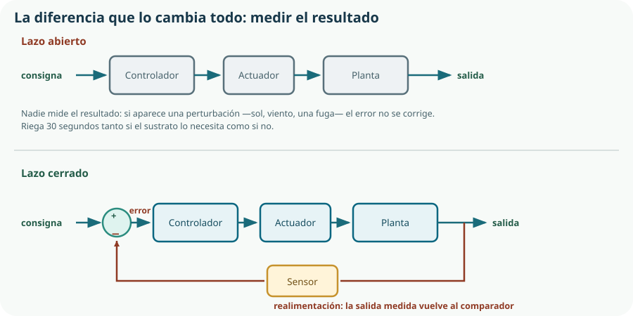

El Bloque F reúne todo lo anterior. La mecánica del Bloque C movía, la electrónica del D accionaba y la programación del E decidía; aquí esas tres cosas se convierten en un sistema que se gobierna a sí mismo. Y empieza con el vocabulario, porque es el tema donde se aprende a hablar de control: consigna, error, realimentación, estabilidad. Con esas palabras se puede analizar cualquier automatismo, desde un termostato hasta un vehículo.
- definir sistema de control e identificar entradas, salidas y perturbaciones;
- reconocer el controlador, el sensor, el comparador, el actuador y la planta en un sistema real;
- distinguir lazo abierto de lazo cerrado y decidir cuál conviene en cada caso;
- explicar qué es la realimentación y por qué permite corregir perturbaciones;
- juzgar un sistema por su estabilidad, su precisión y su tiempo de respuesta;
- modelizar un sistema sencillo mediante un diagrama de bloques;
- explicar el control todo-nada, el problema del ciclado y cómo lo resuelve la histéresis;
- describir el control proporcional y en qué mejora al todo-nada;
- analizar un sistema de control cotidiano identificando todos sus elementos.
1. Qué es un sistema de control
Un sistema de control es un conjunto de elementos que gobierna el comportamiento de otro sistema para que una magnitud tome el valor que queremos. Esa magnitud es la variable controlada, y el valor que queremos, la consigna.
| Señal | Qué es | En el KR-1 | En un termostato |
|---|---|---|---|
| Entrada o consigna | El valor deseado de la variable controlada; lo fija quien manda. | 30 % de humedad del sustrato. | 21 °C. |
| Salida o variable controlada | La magnitud que se quiere gobernar. | La humedad real del bancal. | La temperatura real de la habitación. |
| Perturbación | Todo lo que afecta a la salida y no controlamos. | Sol, viento, lluvia, una fuga, la planta que crece. | Una ventana abierta, gente en la sala, el sol de la tarde. |
2. Los elementos de un sistema de control
| Elemento | Función | En el KR-1 | Se estudió en |
|---|---|---|---|
| Sensor o transductor | Convierte la magnitud física en una señal medible. | Sonda capacitiva de humedad. | Tema 11 |
| Comparador | Resta la medida de la consigna y obtiene el error. | Una línea de código: error = consigna − medida. | Tema 14 |
| Controlador | Decide qué hacer a partir del error. | El ESP32 y su programa. | Temas 12 a 16 |
| Actuador | Ejecuta la acción sobre el proceso. | Electroválvula y su MOSFET. | Temas 8 y 11 |
| Planta o proceso | El sistema que se quiere gobernar. | El bancal con su sustrato y sus plantas. | — |
3. Lazo abierto y lazo cerrado

Lazo abierto
La acción depende solo de la consigna. Es simple, barato y estable por naturaleza. No corrige errores ni perturbaciones, porque no sabe que existen. El temporizador de riego, un microondas, una lavadora con programa fijo.
Lazo cerrado
La acción depende del error: la diferencia entre lo que se quiere y lo que hay. Corrige perturbaciones y tolera imprecisiones del actuador. A cambio, necesita un sensor y puede volverse inestable si se ajusta mal.
| Criterio | Lazo abierto | Lazo cerrado |
|---|---|---|
| Necesita sensor | No | Sí: es su elemento definitorio |
| Corrige perturbaciones | No | Sí |
| Coste y complejidad | Bajos | Mayores |
| Riesgo de inestabilidad | Ninguno | Existe si se ajusta mal |
| Si el sensor falla | No aplica | El sistema decide con datos falsos: es su punto débil |
| Cuándo conviene | Perturbaciones pequeñas o previsibles, y consecuencias leves del error | Perturbaciones grandes o impredecibles, o precisión exigente |
4. Cómo se juzga un sistema de control
Tres propiedades, y las tres se pueden medir. Están relacionadas entre sí, y mejorar una suele empeorar otra.
Estabilidad
Que la salida acabe quedándose quieta en un valor, en lugar de oscilar o dispararse. Es la propiedad imprescindible: un sistema inestable no sirve para nada.
Precisión
Lo cerca que la salida acaba de la consigna. El resto que queda se llama error en régimen permanente.
Tiempo de respuesta
Lo que tarda en llegar. Un sistema muy rápido suele pasarse de largo —sobreoscilación— y tardar más en asentarse.
5. Modelizar con diagramas de bloques
Modelizar un sistema es representarlo de forma que se pueda razonar sobre él sin tenerlo delante. En este curso la herramienta es el diagrama de bloques, que ya conocemos del Tema 3 y ahora recibe su vocabulario propio.
| Símbolo | Significa |
|---|---|
| Rectángulo | Un elemento que transforma su entrada en su salida: controlador, actuador, planta, sensor. |
| Flecha | Una señal, con su nombre. No es un cable: es información o energía. |
| Círculo con signos | Comparador o sumador: combina dos señales, sumando y restando según los signos. |
| Punto de bifurcación | La misma señal va a dos sitios a la vez. |
| Rama de retorno | Realimentación: la salida —medida— vuelve hacia la entrada. |
Cómo se modeliza un sistema paso a paso
¿Qué magnitud quiero gobernar? Humedad del sustrato. Todo lo demás se ordena a partir de aquí.
Qué valor quiero y quién lo fija. El 30 %, fijado en la configuración y modificable desde el panel.
Qué elemento puede modificar la variable. La electroválvula, que añade agua.
Qué elemento puede medirla. La sonda capacitiva, en el propio bancal.
Sol, viento, lluvia, crecimiento de la planta, fuga. Se dibujan como flechas que entran en la planta.
Seguir la flecha desde la consigna hasta la salida y de vuelta. Si el recorrido no se cierra, no hay realimentación.
6. Todo-nada, histéresis y control proporcional
La ley de control es la regla que decide qué hace el actuador según el error. Hay muchas; aquí las dos que se pueden implementar y entender en este curso.
Control todo-nada
El actuador solo tiene dos estados, y se activa cuando el error supera cero. Es lo que hace una nevera, un termostato sencillo y el KR-1.
# Control todo-nada, en su forma más simple
if humedad < CONSIGNA:
abrir_valvula()
else:
cerrar_valvula()Histéresis: dos umbrales en lugar de uno
# Con histéresis: se abre por debajo de un umbral y se cierra por encima de otro
UMBRAL_ABRIR = 28 # %
UMBRAL_CERRAR = 34 # %
if not valvula_abierta and humedad < UMBRAL_ABRIR:
abrir_valvula()
elif valvula_abierta and humedad > UMBRAL_CERRAR:
cerrar_valvula()
# Entre 28 y 34 no se hace nada: se mantiene el estado actualControl proporcional
Si el actuador admite grados —y con el PWM del Tema 10 muchos los admiten—, la acción puede ser proporcional al error: mucho error, mucha acción; poco error, poca acción.
acción = K · error K es la ganancia: cuánto se reacciona por unidad de error
# Control proporcional del caudal, con PWM y con límites
GANANCIA = 4.0
error = CONSIGNA - humedad # % de humedad que falta
accion = GANANCIA * error # en % de apertura
accion = max(0, min(100, accion)) # saturación: nunca fuera de 0-100
valvula.duty_pct(accion)| Ley | Actuador | Ventaja | Inconveniente |
|---|---|---|---|
| Todo-nada | Dos estados | Simplísimo y barato | Ciclado; desgaste del actuador |
| Todo-nada con histéresis | Dos estados | Elimina el ciclado; es lo que usa el KR-1 | La variable oscila dentro de la banda |
| Proporcional | Regulable, con PWM | Suave, sin conmutaciones bruscas | Deja un error residual; hay que ajustar la ganancia |
max(0, min(100, accion)) es imprescindible: si el error es enorme, la fórmula puede pedir un 400 % de apertura, que no existe. Todo actuador real tiene límites físicos, y el programa tiene que respetarlos explícitamente. Omitir esa línea es la causa de que un control «funcione en la simulación» y se comporte de forma extraña en el montaje: la simulación no tiene topes, la válvula sí.7. Sistemas de control a tu alrededor
Identificar los elementos en sistemas cotidianos es el mejor ejercicio del tema, y además es lo que pide el currículo: reconocer el control en máquinas, vehículos e instalaciones.
| Sistema | Variable | Sensor | Actuador | Lazo |
|---|---|---|---|---|
| Cisterna del inodoro | Nivel de agua | Flotador | Válvula de entrada | Cerrado, y totalmente mecánico |
| Termostato de calefacción | Temperatura | Termómetro | Caldera o válvula | Cerrado, todo-nada con histéresis |
| Microondas | Tiempo, no temperatura | Ninguno | Magnetrón | Abierto |
| Control de velocidad de un coche | Velocidad | Sensor de rueda | Acelerador | Cerrado |
| Depósito de una impresora 3D | Temperatura de la boquilla | Termistor | Resistencia calefactora | Cerrado, con control PID |
| Alumbrado público | Iluminación | Célula fotoeléctrica | Contactor | Cerrado, todo-nada con histéresis |
| Semáforo de tiempos fijos | Flujo de tráfico | Ninguno | Luces | Abierto |
Comprueba lo que has aprendido
Este tema se demuestra con diagramas de bloques correctos y con una ley de control razonada y medida.
| Aspecto | Qué debes demostrar | Evidencias posibles |
|---|---|---|
| Vocabulario | Que identificas consigna, variable controlada, perturbaciones y error. | Análisis de tres sistemas cotidianos con sus cinco elementos y su tipo de lazo. |
| Elegir el lazo | Que decides entre abierto y cerrado con criterios, y admites cuándo basta el abierto. | Comparación razonada del KR-1 frente a un temporizador, con el coste de cada uno. |
| Modelizar | Que dibujas el diagrama de bloques y respondes preguntas con él. | Diagrama con perturbaciones dibujadas y respuesta a qué ocurre si falla el sensor. |
| Ley de control | Que implementas histéresis y explicas qué ciclado evita. | Código con los dos umbrales, registro de conmutaciones con y sin histéresis. |
| Medir el comportamiento | Que juzgas el sistema por estabilidad, precisión y tiempo de respuesta. | Gráfica de la variable frente al tiempo, con la consigna marcada y la banda de histéresis. |
Experimento revelador: registra la humedad cada minuto durante un ciclo completo de riego y dibuja la gráfica del Tema 15. Verás la sobreoscilación —el agua sigue infiltrándose después de cerrar la válvula— y entenderás por qué la banda de histéresis tiene que ser más ancha de lo que parecía necesario.
Glosario del tema
- Acción unidireccional
- Situación en la que el actuador solo puede modificar la variable en un sentido.
- Actuador
- Elemento que ejecuta la acción del controlador sobre el proceso.
- Banda muerta
- Intervalo de error en el que el sistema deliberadamente no reacciona.
- Ciclado
- Conmutación repetida y rápida del actuador en torno al umbral, que lo desgasta.
- Comparador
- Elemento que resta la medida de la consigna para obtener el error.
- Consigna
- Valor deseado de la variable controlada.
- Controlador
- Elemento que decide la acción a partir del error.
- Error
- Diferencia entre la consigna y el valor medido de la variable controlada.
- Error en régimen permanente
- Diferencia que queda entre consigna y salida cuando el sistema se ha estabilizado.
- Estabilidad
- Propiedad de un sistema cuya salida acaba quedándose en un valor en lugar de oscilar o dispararse.
- Ganancia
- Factor que relaciona la acción del controlador con el error en un control proporcional.
- Histéresis
- Uso de dos umbrales distintos para activar y desactivar, con el fin de evitar el ciclado.
- Inercia de la planta
- Lentitud con la que el proceso responde a una acción; fija la cadencia razonable del control.
- Lazo abierto
- Sistema cuya acción depende solo de la consigna, sin medir la salida.
- Lazo cerrado
- Sistema cuya acción depende del error entre la consigna y la salida medida.
- Ley de control
- Regla que determina la acción del controlador en función del error.
- Modelizar
- Representar un sistema de forma que permita razonar sobre él sin tenerlo delante.
- Perturbación
- Influencia externa que afecta a la variable controlada y no se gobierna.
- Planta
- Proceso o sistema físico cuyo comportamiento se quiere gobernar.
- Realimentación
- Retorno de la salida medida hacia la entrada del sistema, que permite corregir el error.
- Saturación
- Límite físico del actuador, que el programa debe respetar explícitamente.
- Sobreoscilación
- Exceso por el que la salida se pasa de la consigna antes de estabilizarse.
- Variable controlada
- Magnitud cuyo valor se quiere gobernar.
Resumen esencial
- Un sistema de control gobierna una variable para que alcance una consigna, y existe porque hay perturbaciones que no se controlan.
- Automático no es lo mismo que programado: un temporizador hace siempre lo mismo, un sistema automático se adapta porque conoce el resultado.
- Los cinco elementos son sensor, comparador, controlador, actuador y planta; con microcontrolador, el comparador y el controlador son código.
- En lazo abierto la acción depende solo de la consigna; en lazo cerrado depende del error entre la consigna y la salida medida.
- Elegir lazo abierto cuando basta no es simplificar de más: es buena ingeniería.
- El punto débil del lazo cerrado es el sensor: si miente, el sistema hace algo activamente equivocado.
- Un sistema se juzga por estabilidad, precisión y tiempo de respuesta, y las tres no se pueden maximizar a la vez.
- La cadencia del control debe ser acorde con la inercia de la planta: medir más a menudo no mejora nada y gasta energía.
- Un diagrama de bloques sirve para responder preguntas sin tocar el sistema; un sistema que no se ha dibujado no se ha entendido.
- El control todo-nada produce ciclado, y el ciclado destruye actuadores.
- La histéresis usa dos umbrales y elimina el ciclado a cambio de precisión; y obliga a que el programa recuerde su estado actual.
- El control proporcional hace la acción proporcional al error, es más suave y deja siempre un error residual.
- Toda acción calculada debe saturarse a los límites físicos del actuador: la simulación no tiene topes y la válvula sí.
- La cisterna de un inodoro es un sistema de control completo sin una línea de código: antes de programar, conviene preguntarse si un mecanismo lo resuelve.
Fuentes y recursos fiables
- [1] UNE — Asociación Española de Normalización. Simbología de esquemas funcionales y de diagramas de bloques de sistemas de control.
- [2] GeoGebra. Simulación de la respuesta de un sistema de primer orden y del efecto de la ganancia.
- [3] Wokwi. Simulación del lazo cerrado con ESP32, sensor y actuador.
- [4] MicroPython — Referencia rápida del ESP32 (en inglés). Salidas PWM para el control proporcional.
- [5] Decreto 64/2022, de 20 de julio (BOCM). Currículo de Tecnología e Ingeniería I, bloque F y criterio 5.1.